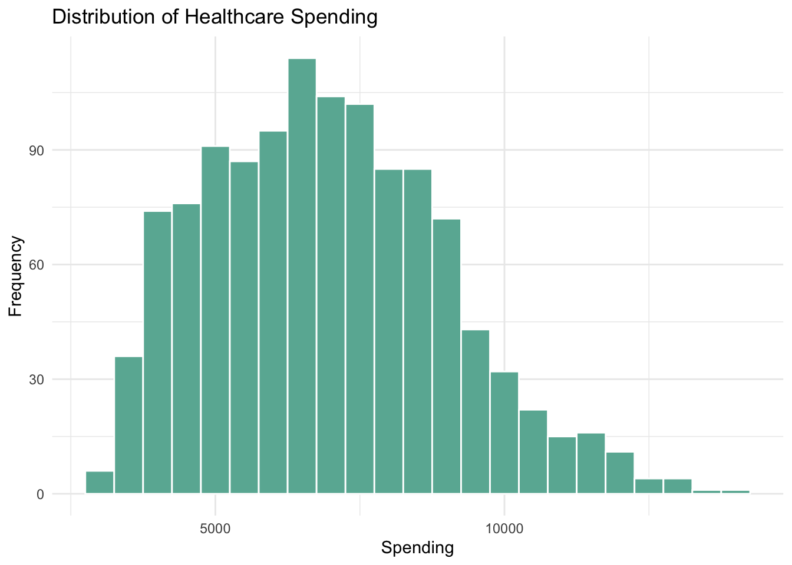
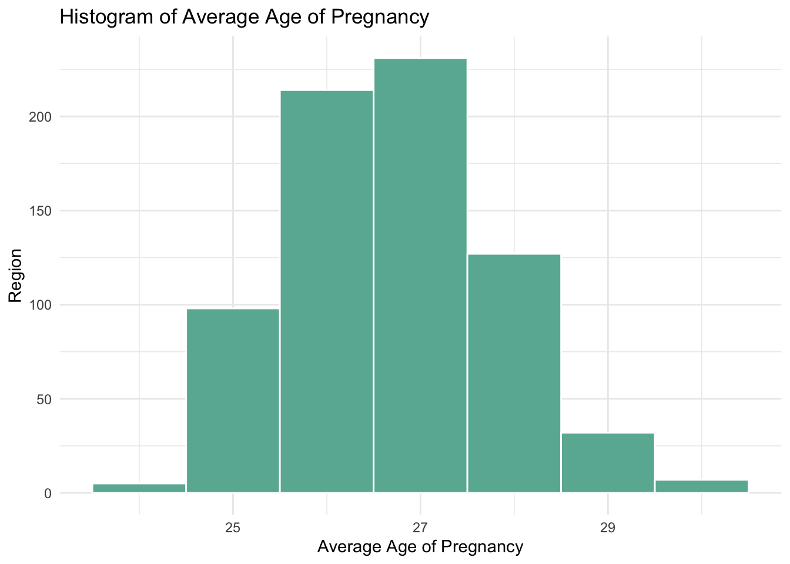

| Variable | Data_Types | Description |
|---|---|---|
| location_id | number | A unique numeric identifier for the location generated and stored in an IHME database of data dimensions. |
| location_name | text | The location for the estimate. |
| race_group | text | The racial and ethnic group for the estimate. |
| year_id | number | The time period for the estimate. |
| val | number | Mean estimate. |
| lower | number | 97.5% percentile estimate. |
| upper | number | 2.5% percentile estimate. |
Data
Describe the sources of our data and the cleaning process.
Maternal Mortality Data
Data Background
The dataset comes from the Institute for Health Metrics and Evaluation and is supported by the Global Health Data Exchange. It presents maternal mortality ratios for women in the United States from the ages 10-54 for the years 1999-2019. Source
There was no clear information on the original way of collecting the data, but from the organization, it can be inferred that the data could be mostly from medical records across the country. The original guidebook
The dataset includes MMR (maternal mortality ratio) estimates for Hispanic and any race; non-Hispanic American Indian and Alaska Native; non-Hispanic Asian, Native Hawaiian, or other Pacific Islander; non-Hispanic Black; and non-Hispanic White females ages 10-54 for each year from 1999 through 2019.
Although the data is quite accessible, however, pivoting the data or making sub tables would likely aid in our analysis given its current organization. Some questions we can look at with this data are: “How does maternal mortality change over time? How does maternal mortality vary across different states? How does maternal mortality vary across ethnic groups?” At a deeper level, we could investigate how maternal mortality varies across both state and race groups, and compare with additional data about healthcare for different racial groups to add on a new data set. A possible challenge comes in interpreting the value for the maternal mortality ratio.
The data is often used to help in understanding the disparities in maternal health outcomes among different racial and ethnic groups. There are some publications related to this data already and they both highlight the points out the fact that maternal mortality rates are highest for the black population and the large increase trend across all groups especially in American India. One constantly asked question is how the huge increase in maternal mortality rate has happened with the development of medical technology over the past 20 years.
Data Loading and Cleaning
Data Loading and Cleaning Script The file we chose initially has columns measure_id, measure_name, location_id, location_name, race_group, sex_id, age_group_id, age_group_name, year_id, metric_id, val, lower, and upper. It has 5901 observations. This odd number indicates that there may be some missing observations for certain location/race/year combinations. To load the data, we made an account and downloaded the .csv file called IHME_USA_MMR_STATE_RACE_ETHN_1999_2019_ESTIMATES_Y2023M07D03. We then read it into a dataframe in R. Since the data is already very clean, we simply selected the columns location_id, location_name, race_group, year_id, val, lower, upper to keep in our cleaned dataset and discarded the rest. We chose to discard those columns because every observation had the same value. For example, every observation was Female in the age group 10 to 54. We then saved this cleaned dataframe as a .Rdata file in our repository.
Variable Descriptions
Distribution Analysis
Warning: Removed 6 rows containing non-finite values (`stat_bin()`).Warning: Removed 2 rows containing missing values (`geom_bar()`).
Figure 1: Distribution of Maternal Motality Ratio
The histogram provided illustrates the distribution of Maternal Mortality Ratio (MMR) in the United States from 1999 to 2019, showcasing a right-skewed distribution. Most of the observed MMR values fall between 0 and 50, indicating that lower maternal mortality rates are more prevalent across the dataset. The highest frequency is observed in the 0-10 MMR range, suggesting that very low MMR values are common. However, the presence of values up to 150, though less frequent, highlights areas where maternal health risks remain higher. This variability in MMR points to potential targets for healthcare improvements and interventions to address higher mortality rates in specific regions or demographics.
Healthcare Spending Data
Data Background
These data come from the Center for Medicare and Medicaid Services. It presents personal healthcare spending per-capita in the United States for each of the years covered in our initial data set.Source: National Health Expenditure Data by State of Residence
The data includes spending broken down by state of residence of the person receiving care, and into subcategories by the type of establishment delivering care (hospitals, physicians and clinics, nursing homes, etc.) and what medical product is being purchased (prescription drugs, over-the-counter medicines and sundries and durable medical products such as eyeglasses and hearing aids). The sources of the spending data are listed as the Centers for Medicare and Medicaid Services, the Office of the Actuary, and the National Health Statistics Group. The source of the population data in order to calculate per-capita spending is listed as the U.S. Bureau of the Census as of December 2020.
Data Loading and Cleaning
Data Loading and Cleaning Script
These data come with multiple data sets, however for our analysis we chose to work with the file US_PER_CAPITA20.CSV in order to view from a summary perspective. The file initially comes with variables Code, Item, Group, Region Number, Region Name, Years 1991-2020, and Average Annual Percent Growth. It has 600 observations, one for each of the states and region groups for ten different spending breakdowns. We chose to look at the spending item “Personal Healthcare” which represents a summary of all the other items. Since no item in particular connected with natal care, we chose to look at the summary as a overall indicator of spending in order to generally represent natal care. We also chose to only look at the years 1999-2019 in order to match our initial data set.
This data set went through an extensive cleaning process because although it was very clean and easy to use upon initial loading, it’s format did not match our existing data. We had to reclassify the region to match official United States census regions and create new summaries for the new region breakdowns. We then pivoted the table longer to maintain only three columns (year, state, and spending) where previously the values for each year were in a new column. The dimensions now matched our maternal mortality data so we were able to merge them into one clean data frame.
Variable Descriptions
| Variable | Data_Types | Description |
|---|---|---|
| location_name | text | Name of the location |
| year_id | number | ID representing the year of the data collected. |
| spending | number | The average healthcare spending of each location each year. |
Distribution Analysis

Figure 2: Distribution of Healthcare Spending
The histogram reveals that the distribution of healthcare spending is right-skewed, with most data points clustered in the lower and middle ranges of spending. The distribution peaks around spending values of 5000 to 8000, indicating that this is the most frequent spending range. The data shows a gradual decline towards the higher spending values, reflecting the decreasing frequency of such values. Overall, healthcare spending predominantly occurs at the lower end of the spectrum, with a long tail extending towards higher values.
Average age of Pregnancy data
Data Background
These dataset is collected by the Guttmacher Institute. It provides a detailed compilation of statistics related to pregnancy outcomes across the U.S. The primary goal of collecting this data was to inform the public health policy and enhance the understanding of the reproduction health situation across the country. Source
This data is a combined data relied on the public resource, National Center for Health Statistics (NCHS) National Vital, Statistics System (NVSS), the original data also contains the abortion data and the population data. In consideration of the various original resources, we performed data cleaning to keep the reliability of the dataset. This data provides both regional and aggregate data that illustrate the potential problem of the uneven distribution of healthcare resources and other problems. This dataset comprises the statistics over 5 decades, which allows the researchers to perform the longitudinal studies.
However, As this data relies on multiple sources, including state health departments, the CDC, and direct survey which creates inconsistencies in the format of the dataset. Some states might have more rigorous data collection than others. In response to this potential problem, we regenerate a category of region to group the adjacent states together. With this performance, we see a clearer distribution trend.
To be noticed, the data collected and reported might vary a lot between states due to different laws, health care coverage and reporting standards. And for years where data wasn’t collected, it might result in error in predictions if there are atypical fluctuation of the data in that year.
Data Loading and Cleaning
Data Loading and Cleaning Script
In our research, we first found an unexpected trend of increasing trend of the maternal mortality rate, we then want to take a further step to look at if the average age of pregnancy could give us a positive correlation in analysis. In order to minimize the influence of the reporting biases during the process of data collection, we add a new category called region using the same framework of the mmr data. We removes the abortions and birth data in purpose of minimizing the number of resource this data depends on. In order to generate a more efficient graph, we calculated the average age of pregnancy in a single year using age group data. As our first intention was to see if the increasing average age of pregnancy could give a reasonable explanation on the growing trend of maternal mortality rate, we combine the average age data to the previous one.
Variables Description
| Variable | Data_Types | Description |
|---|---|---|
| state | text | state name |
| year | number | Year of the data collected. |
| spending | number | the average healthcare spending of each state each year. |
| mean_val | number | Mean estimate of the mmr |
| AverageAge | number | the average age of pregnancy for each state each year |
| region | text | The regional category for the state. |
Distribution Analysis

Figure 3: Distribution of Average Age of Pregnancy
The histogram illustrates the distribution of the average age of pregnancy across various regions, with the most common age range being 25 to 27 years, as indicated by the tallest bar. This suggests that in most regions, the average age at which women are pregnant falls within this bracket. The histogram also shows that as the average age of pregnancy increases, fewer regions report these higher ages, with the 27 to 29 age range being less common and below 25 being the least common. This data can be valuable for designing region-specific healthcare policies and programs that address the reproductive health needs of women according to their predominant age groups.